For this project, I observed users using an interface and conducted
interviews in order to build a persona to represent the standard users
of this interface and a storyboard for one of these personas. For my
interface, I chose the Coca Cola Machines at Andrew's dining hall in
Brown University, and I observed how users interacted with and used the
interface. Here is a picture of the main screen of the machine:
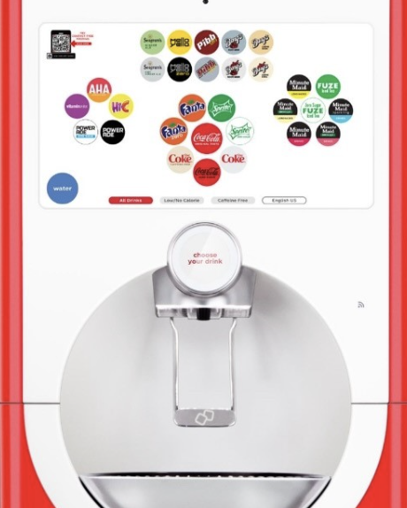
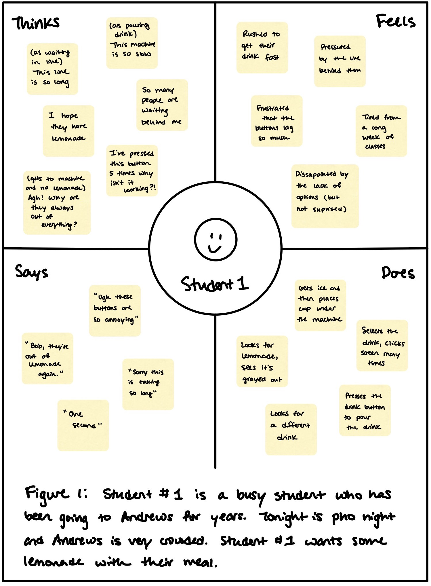
This is a persona to represent students who are familiar with the
machine. The persona faces the problem of the interface not responding
immediately to touch and the pressure of the line behind them. This
persona represents these users because it generally has an idea of
what they want when they go to the machine, experiences disappointment
when their favorites have run out, and experiences difficulty pressing
the buttons on the interface’s screen.
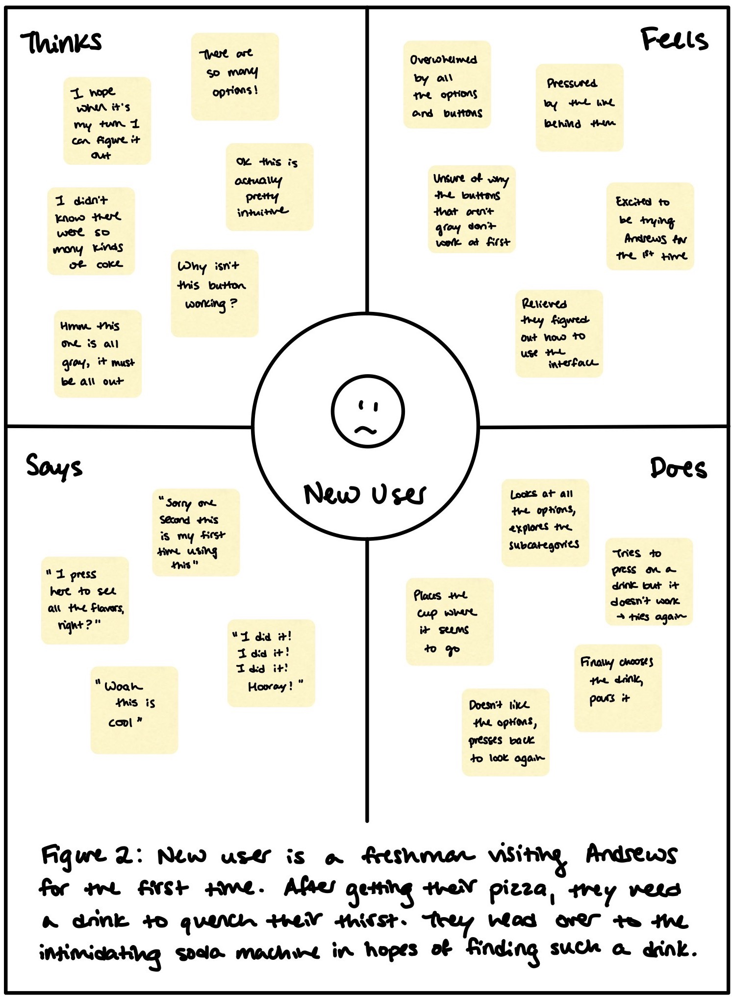
This persona reflects new users of the machine - such as first-year
students. This persona faces the problem of figuring out how the
machine works for the first time and getting acquainted with the
interface. They too face the problem of a laggy interactive screen on
the interface. The persona represents the users because it captures
their shared uncertainty at first about the interface and quick
ability to pick up on how to use it intuitively.
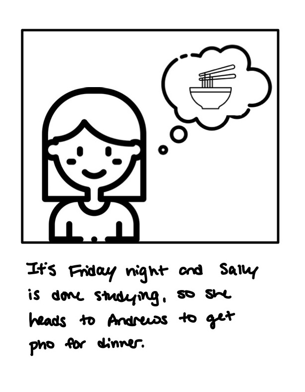
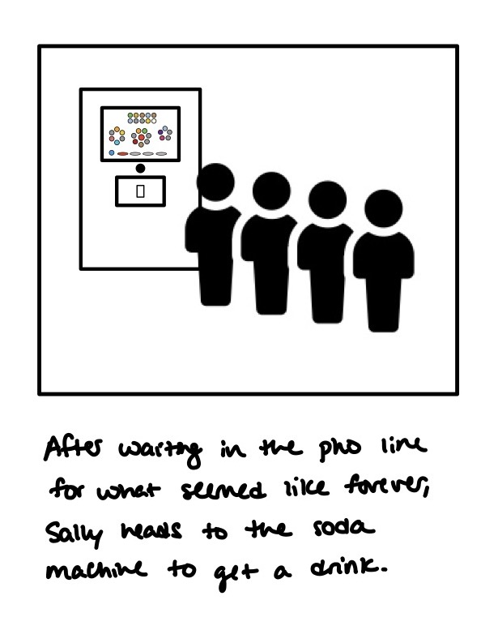
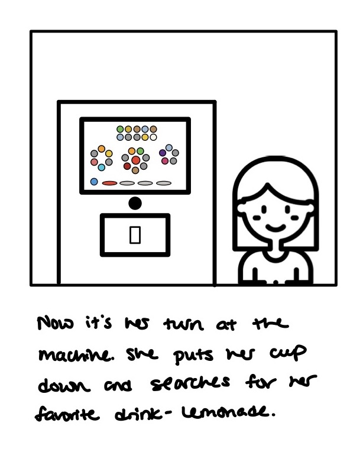
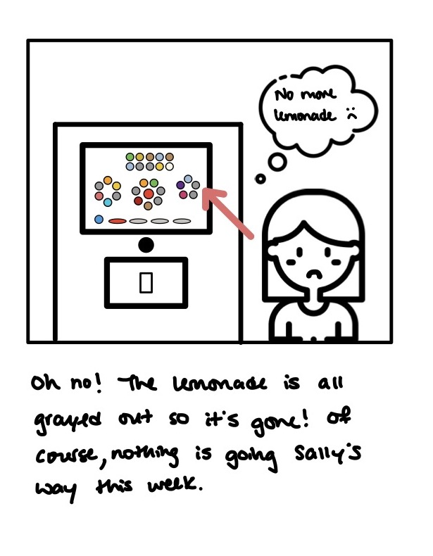
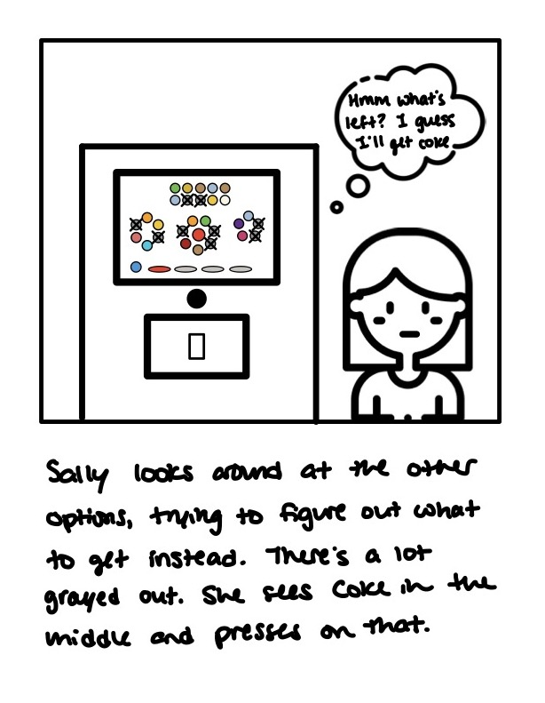
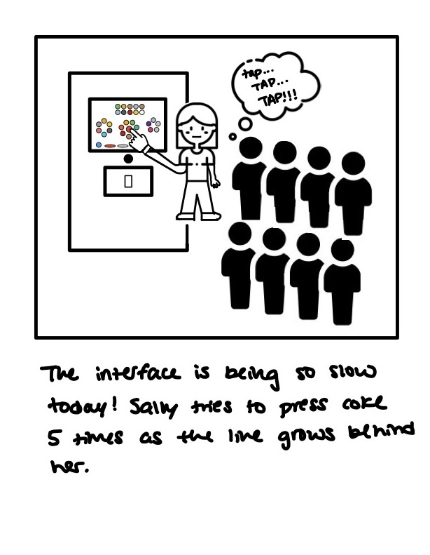
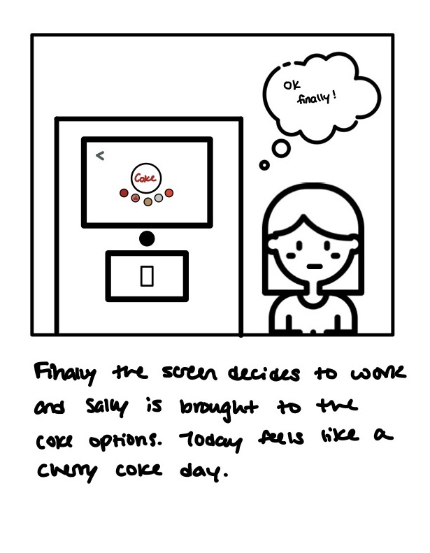
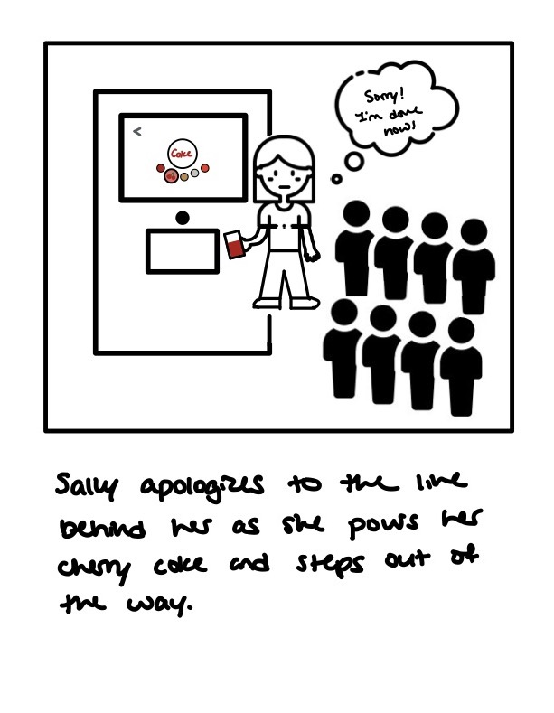
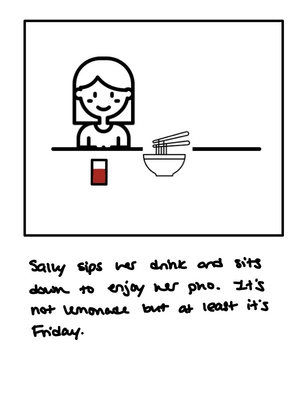